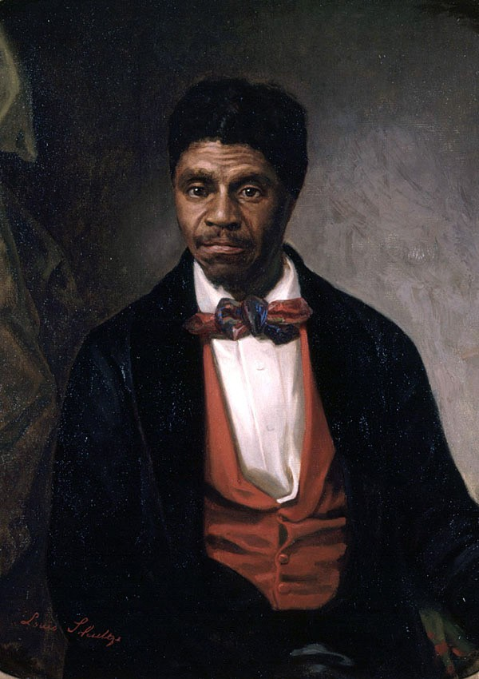

Directions: Read the two records and the background note, then answer the questions.
Background. The Republican Party, organized in 1854, adopted its first national platform in June 1856 and ran John C. Frémont for president. Nine months later, on March 6, 1857, the Supreme Court decided Dred Scott v. Sandford. The first record is from the platform. The second is from Justice Benjamin Curtis's dissent in the case.
"Resolved: That the Constitution confers upon Congress sovereign powers over the Territories of the United States for their government; and that in the exercise of this power, it is both the right and the imperative duty of Congress to prohibit in the Territories those twin relics of barbarism--Polygamy, and Slavery."
Source: Republican Party Platform of 1856, as transcribed by the American Presidency Project (Peters and Woolley), fetched in full during this lesson's preparation. Spelling follows the transcription, including its double hyphen.
"It has been often asserted that the Constitution was made exclusively by and for the white race. It has already been shown that, in five of the thirteen original states, colored persons then possessed the elective franchise, and were among those by whom the Constitution was ordained and established. If so, it is not true, in point of fact, that the Constitution was made exclusively by the white race. [...] And as free colored persons were then citizens of at least five states, and so in every sense part of the people of the United States, they were among those for whom and whose posterity the Constitution was ordained and established. [...]"
Source: Mr. Justice Curtis, dissenting, in Dred Scott v. Sandford, 60 U.S. 393, as transcribed by Teaching American History from the United States Reports text, fetched during this lesson's preparation. Cuts are marked with ellipses.

1. State the platform's claim about Congress and the territories, naming the two practices it calls the twin relics of barbarism and the two words it uses for what Congress holds, a right and a duty.
2. The party that adopted this platform ran its first presidential campaign that same year. Using the lesson's record, state how that campaign ended, naming the nominee, the free states he carried, and the man who won.
3. Rebuild Curtis's argument: the number of original states where colored persons held the elective franchise, what that fact proves about who ordained the Constitution, and the conclusion he draws about free colored persons and the people of the United States.
4. A student writes that the Supreme Court settled the slavery question in 1857, as courts settle questions. Test the claim against this lesson's record. Name two dated facts the claim leaves out, one about the decision itself and one about what followed it by 1860, and state what each one shows.
1. The platform's claim. The platform claims that the Constitution confers on Congress sovereign powers over the territories, and that prohibiting in the territories the twin relics of barbarism, polygamy and slavery, is both the right and the imperative duty of Congress. Both halves belong in a full answer: the power claimed is sovereign, and the platform frames its use not as permission but as duty. (Blueprint 7)
2. How the first campaign ended. The Republican nominee was John C. Frémont, the explorer called the Pathfinder. He carried eleven of the sixteen free states, and the Democrat James Buchanan won the election, on Pennsylvania and the South. A full answer adds what both sections learned: a wholly northern party had nearly won the presidency in its first campaign, on northern votes alone. (Blueprint 7)
3. Curtis's argument rebuilt. In five of the thirteen original states, colored persons possessed the elective franchise at ratification and were among those by whom the Constitution was ordained and established, so it is not true, in point of fact, that the Constitution was made exclusively by the white race. Free colored persons were citizens of at least five states and so in every sense part of the people of the United States, among those for whom and whose posterity the Constitution was ordained and established. (Blueprint 8)
4. Test the claim of a settled question. Any two dated facts, accurately used, one of each kind. About the decision itself: it was 7 to 2, with Curtis's dissent answering the citizenship holding from the ratification record of free Black voters in five states, so the Court was divided on the founding facts it claimed to settle; or Taney reached the Missouri Compromise's constitutionality after the citizenship holding had already removed Scott's standing to sue, as Curtis objected. About what followed: Lincoln's House Divided speech of June 16, 1858 charged the decision as part of a design to make slavery national; and in 1860 the party whose platform the decision had voided elected Abraham Lincoln president on that platform, after which secession began. A settled question is not ordinarily reopened by a presidential election within four years. (Blueprint 8)
Teacher note. This check is formative. Question 3 is the one to read closely: a student who can rebuild Curtis's franchise argument holds the strongest counter evidence in the lesson. Question 4 separates students who can test a settlement claim against a sequence of dated facts from students who treat a court's word as settlement by definition.